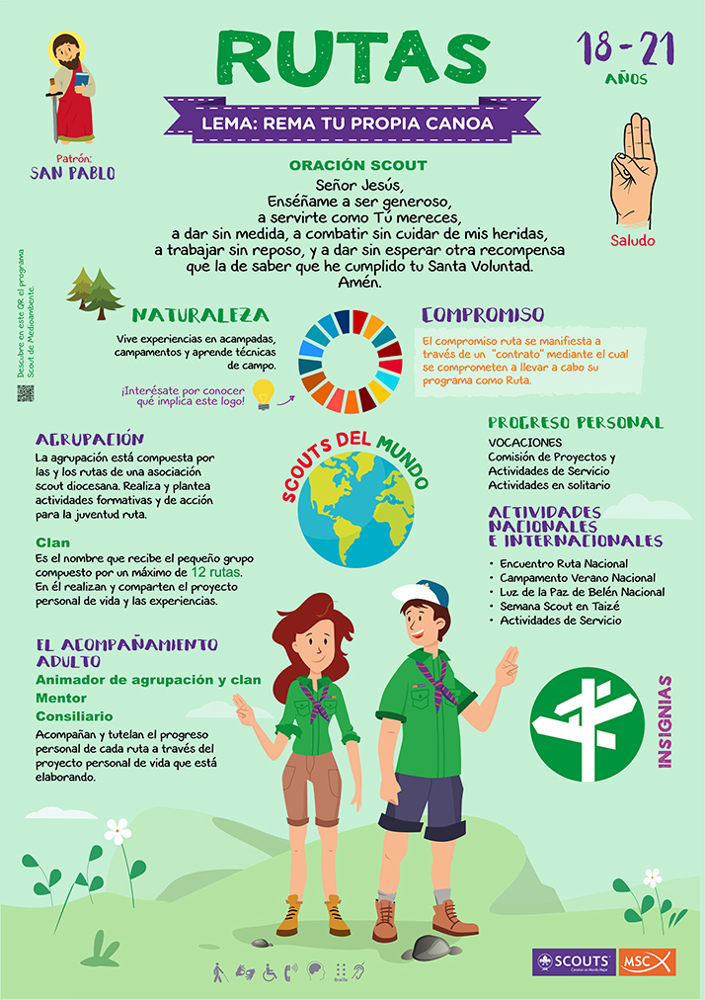
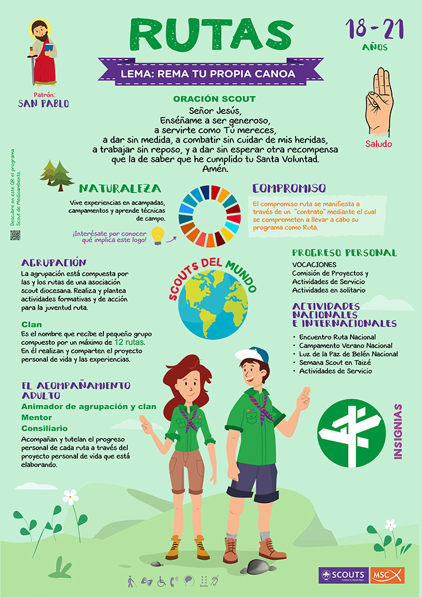

La rama viene definida por jóvenes-adultos, que comprenden edades de 18 a 21 años, pudiendo alargar la permanencia en la rama hasta los 23 años. Los rutas se encuentran en un momento de su vida en el que están viviendo experiencias a través de las cuales se está incorporando al mundo de los adultos. Por ejemplo, ya son mayores de edad (o están a punto de serlo).
Es posible que en este momento acaben de tener un cambio importante en su vida: acaban de cambiar de lugar de residencia, o han cambiado de centro educativo, o se han incorporado al mundo laboral…
Todos estos cambios los están viviendo con prisas y, posiblemente, con algunas dudas. Sin embargo, es evidente que van a suponer experiencias que hasta ahora, como niños y adolescentes, no habían tenido oportunidad de vivir.
La propuesta de la rama ruta persigue facilitar muchísimas experiencias atractivas, elegidas por el propio joven y vividas con las personas que él quiera. Ayudándole a responder a los retos que se le van a plantear en los próximos años, como (por ejemplo) encontrar su primer trabajo.
La rama ruta es un lugar que les facilita a llevar adelante sus proyectos, donde aprenden a emprender, donde les sea más fácil encontrar su primer trabajo, donde puedan ser por fin independientes y donde puedan ejercer su papel como ciudadanos con información y formación suficiente.
Un sitio donde compartirán todas tus experiencias con un grupo de amigos en la misma situación que ellos; se formará con otros jóvenes iguales una asociación en la que decidirán lo que harán y no harán, lo que quieren y no quieren. Además habrá adultos que en lugar de decirles lo que hay que hacer, de dirigirles, de enseñarles desde la superioridad del que sabe, les acompañaran a través de un diálogo en el que el ruta sea el que decide.
En definitiva… la Ruta supone encontrar un camino para ser adulto, para ser independiente, libre y para ser FELIZ.
Quiero meter un párrafo más Quiero meter un párrafo más Quiero meter un párrafo más Quiero meter un párrafo más Quiero meter un párrafo más Quiero meter un párrafo más Quiero meter un párrafo más Quiero meter un párrafo más Quiero meter un párrafo más Quiero meter un párrafo más Quiero meter un párrafo más Quiero meter un párrafo más Quiero meter un párrafo más
Quiero meter un párrafo más Quiero meter un párrafo más Quiero meter un párrafo más Quiero meter un párrafo más Quiero meter un párrafo más Quiero meter un párrafo más Quiero meter un párrafo más Quiero meter un párrafo más Quiero meter un párrafo más Quiero meter un párrafo más Quiero meter un párrafo más Quiero meter un párrafo más Quiero meter un párrafo más